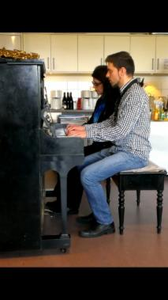
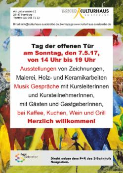
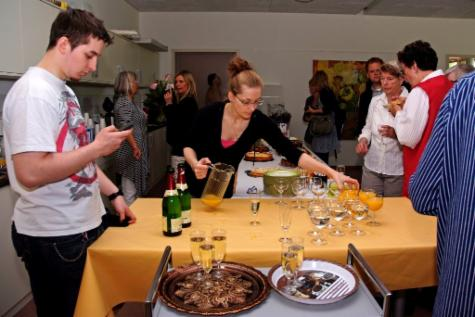

  
Das Kulturhaus Süderelbe präsentiert sich und kehrt das Innerste nach außen:
Am 7.Mai 2017 können Gäste bildende Kunst von den KünstlerInnen und ihren KursteilnehmerInnen genießen, der Musik von Bettina Sehlbach am Klavier und< Kai Lüdemann an Bass und Gitarre und einem Überraschungsgast lauschen und seinem Seelchen mit Kaffee und Kuchen, Grill und Wein etwas Gutes tun. Die Kids des Tanztheaterprojektes von Wiebke Heinrich zeigen Ausschnitte ihres Könnens, nachdem sie so lange trainiert haben.
Bisher haben Besucher auch immer Positives über die Gespräche mit den Kursleitern oder anderen Gästen berichtet, die sie lange nicht gesehen haben. Schauen wir mal, was sich noch so alles ergibt!